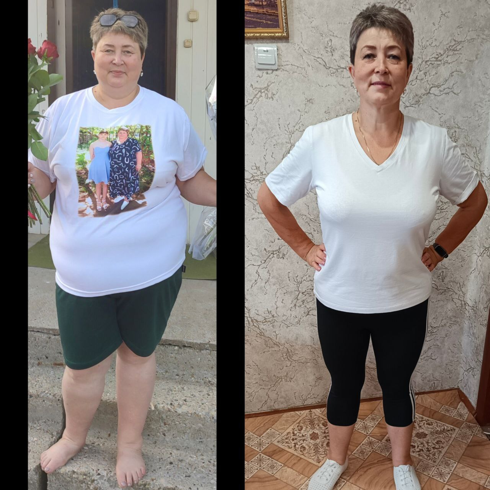

Сбалансированное питание + ежедневное сопровождение куратора. Результат — с первой недели. Без подсчёта калорий, без запретов, без силы воли.
Хочу в программу →Если хотя бы один пункт — про тебя, ты попала туда куда надо
Я работаю в области питания с 2009 года. За это время через меня прошли сотни клиентов — из России и других стран. Работаю онлайн, с любой точкой мира.
Мой личный результат после рождения дочери: −14 кг за 4 месяца. Без изнурительных тренировок, без растяжек, без токсикоза — потому что рацион был выстроен правильно ещё до родов.
Я не продаю мечту. Я показываю систему которая работает — на себе и на реальных клиентах уже 17 лет.
Реальные люди — реальные цифры
4 этапа — от первого дня до устойчивого результата
Составляем индивидуальный план питания под твой образ жизни. Начинаем сбалансированные завтраки и ужины с белковым коктейлем — два полноценных приёма пищи за 5 минут каждый.
✓ На 2–3 день тяга к сладкому заметно слабее«Час позитива» — разбираем почему диеты не работают и почему срывы это не слабость. Ежедневный разбор рациона с куратором: что скорректировать, как идёт процесс.
✓ Перестаёшь себя винить — начинаешь действоватьМастер-классы по быстрым ПП-блюдам. Травяной напиток для лёгкой энергии без тревожности. Три простых действия встраиваются в уже существующий день — без перестройки жизни.
✓ Новые привычки встают в расписание самиКуратор рядом каждый день до самого конца программы. В расширенном тарифе — 4 личные консультации с Ириной. Выходишь с привычками которые работают без программы — потому что они уже твои.
✓ Ты не «держишься» — ты просто живёшь иначеЯ не узнала об этом из книжки
В 18 лет у меня были серьёзные проблемы с кишечником. Врачи помогали мало. Я не знала что делать — и начала сама разбираться в том, как работает питание. Не из любопытства. Просто потому что другого выхода не было.
Это затянуло всю семью.
Бабушка которая несколько месяцев не выходила из дома — через три недели сама дошла до магазина. Соседи удивились. Мама на очередном осмотре услышала от врача: «Что вы делаете? Продолжайте». Мы почувствовали энергию которой не было раньше.
Это было так убедительно, что я посвятила этому следующие годы.
В 2009 году у меня родилась дочь. Я набрала вес во время беременности — и за 4 месяца вернула его обратно, минус 14 килограммов. Без изнурительных тренировок. Без жёстких ограничений. Потому что рацион был сбалансирован ещё до родов — не было ни растяжек, ни токсикоза.
Сейчас дочери 17 лет. Она выросла на правильном питании с рождения — и я вижу разницу с её сверстниками каждый день.
За эти годы через меня прошли сотни клиентов. Я видела женщин которые пробовали всё — и которым всё равно удавалось выйти из этого круга. Не через силу воли. Через понимание того как работает их тело.
FreshVibe — это не «ещё одна диета». Сравни сама.
Не «я так думаю» — а то, что давно доказано
То что работает — в общих чертах, без лишней воды
Когда тело получает белок, клетчатку и микроэлементы с утра — уровень сахара стабилизируется на весь день. Вечерняя тяга к сладкому снижается кратно. Не нужна сила воли — нужен правильный завтрак.
✓ Меньше тянет на сладкое весь деньУ каждого срыва есть своя причина — не голод, а определённая эмоция или ситуация. Когда знаешь свою причину — можно переключиться за 3 минуты. Без запретов, без борьбы с собой.
✓ Срывы становятся редкими — без усилийБольшинство вечерних срывов — это не голод. Это усталость, стресс или привычка. Один простой ритуал по 10 минут меняет вечернюю петлю — и холодильник перестаёт тянуть.
✓ Вечера становятся твоимиВсё это — по шагам, под твой день, без перестройки жизни — мы разбираем вместе в программе. Не теория. Конкретно что делать утром, что вечером, и что реально помогает не сорваться.
Хочу в программу →131 кг → −48 кг. Без операций. Без уколов.

Через 6 месяцев: −35 кг, −45 см в объёмах.
Через 13 месяцев: −48 кг. Без хирургических вмешательств.
Я сама знаю каково это — когда тело не слушается, еда занимает голову, и кажется что у всех получается, а у тебя нет.
Я нашла выход для себя и своей семьи. За 17 лет работы я видела сотни женщин которые выходили из этого круга — не через силу воли, а через понимание своего тела и правильное питание.
Я хочу чтобы как можно больше женщин нашли этот выход. Быстро. Без мучений. И навсегда.
Представь две версии себя через месяц
Разница между этими двумя версиями —
одно решение, принятое прямо сейчас. Хочу быть версией 2 →После старта новые участницы не принимаются.
До конца специального предложения осталось:
Если в первые 7 дней решишь что программа не для тебя — верни продукты и получишь их стоимость обратно. Доставку при возврате оплачиваешь самостоятельно.
6 материалов бесплатно — при оплате в течение 24 часов
5 конкретных действий на момент вечернего срыва — распечатай и повесь на холодильник. Работает за 3 минуты.
Пошаговый план что делать прямо в момент когда не можешь остановиться. Не «держись» — а конкретные действия, шаг за шагом.
Распечатай и ставь галочки. Когда видишь серию — рука не поднимается её прервать.
Находишь свою причину — понимаешь что на самом деле происходит вечером. Это меняет всё.
Что брать, что обходить стороной, как читать этикетки. Один раз прочитала — ходишь по-другому.
Вводишь свои данные — получаешь норму белка, жира и углеводов именно под тебя. 2 минуты.
Выбери тариф — от 10 до 45 дней. Куратор, поддержка и все материалы включены.
Смотреть тарифы →Гарантия возврата продуктов 7 дней · Оплата онлайн
Открой страницу тарифов, выбери подходящий и оплати онлайн.
Разбираем твою ситуацию, подбираем рацион и продукты под твои цели и образ жизни.
Куратор напишет лично в первый день — и будет рядом каждый день.
Есть вопросы? Частые вопросы или напиши Ирине лично.
Остались вопросы перед записью?
Читать ответы на частые вопросы →Просто ешь — с удовольствием, без войны с собой.
Начать прямо сейчас →Гарантия возврата 7 дней · Онлайн · с любой точки мира